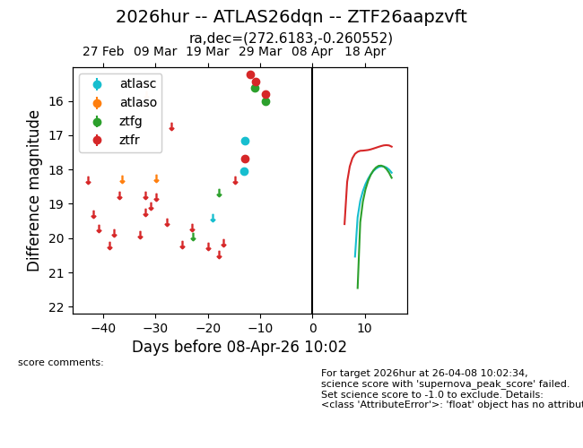
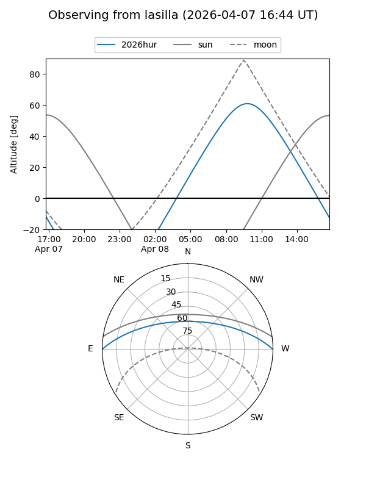
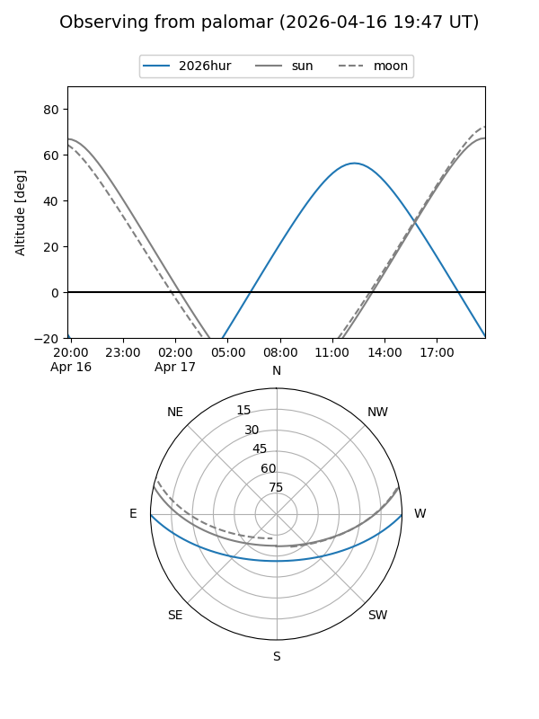
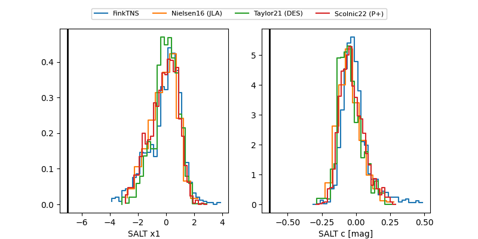

2026hur
Target 2026hur at 2026-04-08 10:07
Aliases and brokers:
FINK: link
Lasair: link
ALeRCE: link
TNS: link
YSE: link
alt names
ZTF26aapzvft (ztf,fink_ztf)
2026hur (tns,yse)
ATLAS26dqn (atlas)
Coordinates:
equatorial (ra, dec) = 272.6183,-0.26055
equatorial (HMS+DMS) = 18:10:28.39,-00:15:37.99
galactic (l, b) = (27.9884,+8.98394)
Flags:
Photometry:
last atlasc=17.17, ztfg=16.02, ztfr=15.80
2 atlasc, 2 ztfg, 4 ztfr detections
Lightcurve

Visibility


Additional plots
